Prerequisites (事前準備)
This page explains the steps that you have to do before attending the workshop. このページはワークショップまでに必要な事前準備を説明しています．
- Software Environment Setup (ソフトウェア環境セットアップ)
- Installing Matlab in Ubuntu （UbuntuでのMatlabのインストールの方法）
- Getting used to Ubuntu
- Getting used to Matlab
- Getting used to Git/Github
- Comment below
Software Environment Setup (ソフトウェア環境セットアップ)
- Please prepare a Laptop with these minimum requirements for doing the exercises. （必要最低限性能は以下の二点です．)
- Intel i3 Processor
- 2 GB RAM
-
Download VirtualBox software from here and install the software on your laptop. （”VirtualBox”をこのページからノートPCにダウンロードしてインストールしてください．）
-
Copy the Ubuntu VirtualBox image from the shared PC of ShibataLab to your Laptop. The file is available in the Desktop\Workshop folder titled Workshop.ova. （柴田研究室の共有パソコンから”Ubuntu”（OS）をコピーしてください．ファイル名は”Workshop.ova”となっており，デスクトップにあります．)
-
Open VirtualBox and import the Ubuntu image as shown below. （次の手順でインポートしてください．）
- Open VirtualBox:
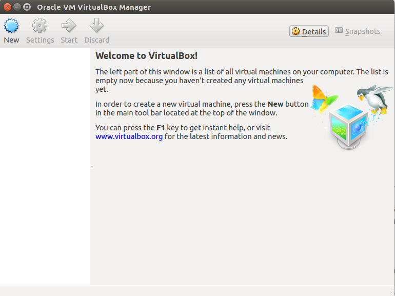
- Import Appliance:
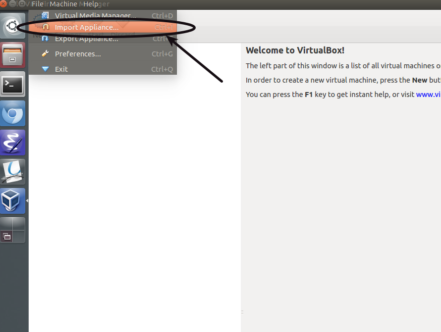
- Open the OVA file:
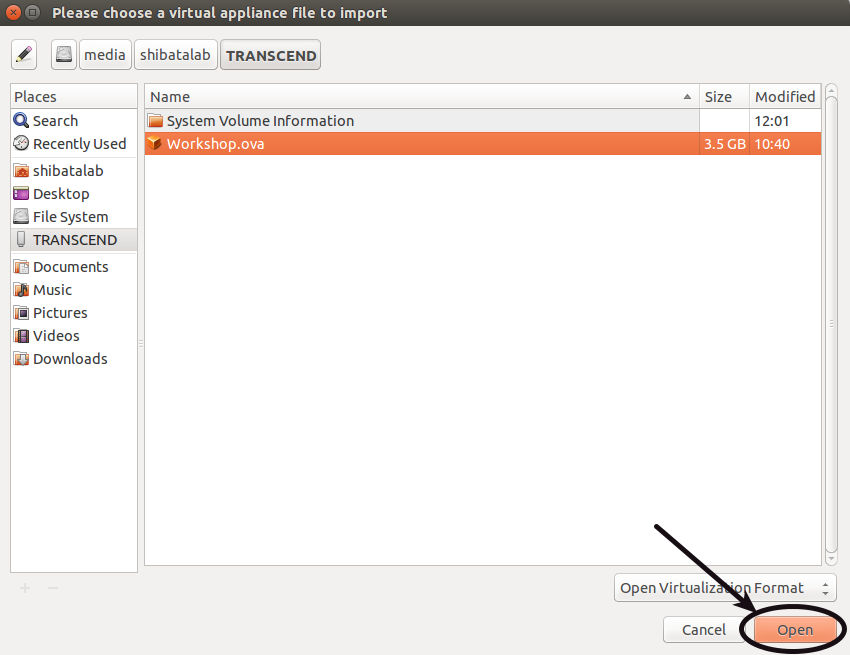
- Start importing:
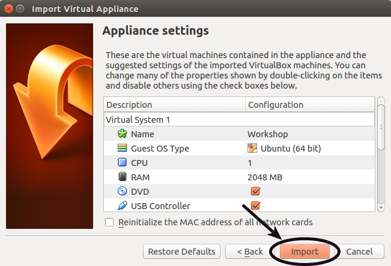
- Start Ubuntu 14.04:
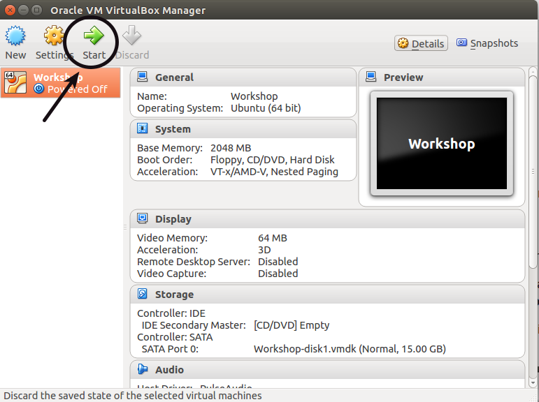
- This will start Ubuntu operating system. The login password is workshop and the sudo password is also workshop. （ログインパスワードと管理者として実行するときのパスワードはどちらも”workshop”です．）
With this you have finished setting up the software environment for the workshops. （これでワークショップに必要なソフトウェア環境は整います．）
Installing Matlab in Ubuntu （UbuntuでのMatlabのインストールの方法）
Exercises for Machine Learning and Motion Capture workshops will be conducted in Matlab. For this, you will have to install Matlab on the Ubuntu virtual image. （”Machine Learning”と”Motion capture”はMatlabが必要です．MatlabをUbuntuにインストールしてください．）
- Open a web browser and go to the mathworks website and create a mathworks account. （MathworksのウェブサイトでMathworksのアカウントを作ってください．）
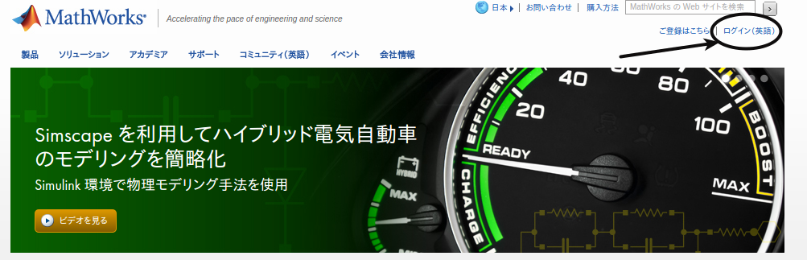
- Obtain a trial license for using Matlab from the website. （製品評価版を入手してください．）
- Open a terminal window by using the shortcut Alt+Ctrl+t or pressing the terminal icon and type in the following commands. You will be asked to enter the sudo password which is workshop. （ショートカットキー”Alt+Ctrl+t”もしくはターミナルアイコンを押してください．次のコマンドを入力してください．必要なパスワードは”workshop”です．）
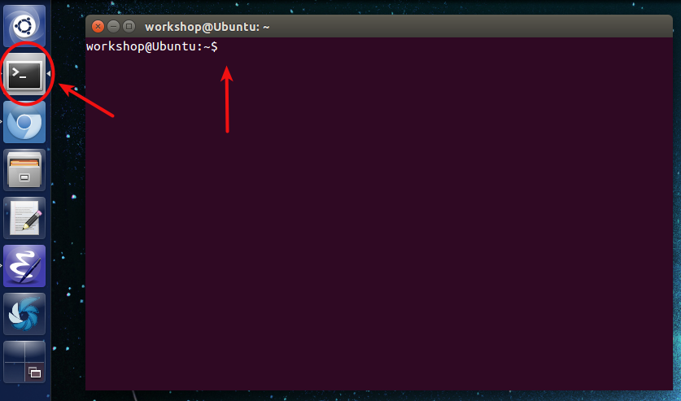
cd ~/Downloads/Matlab/
sudo ./install-
When the Matlab installer opens, follow the instructions to complete the installation. （Matlabのインストーラーを開いたら、次の手順でインストールしてください．）
- Install the software using your Mathworks account:
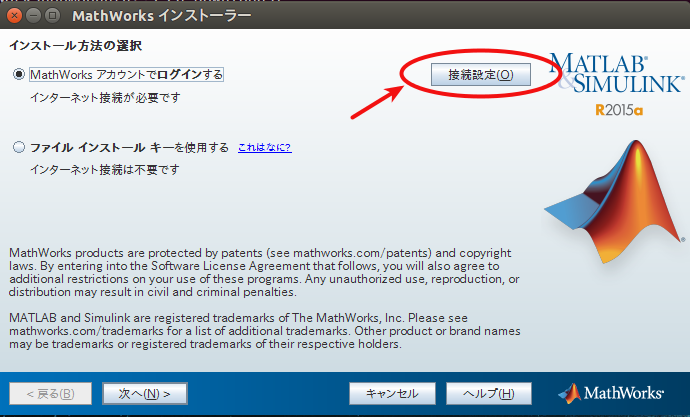
- Enter mathworks account details:
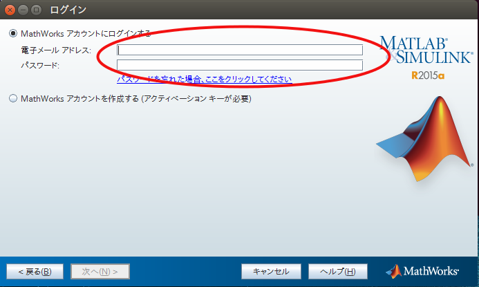
- Installation progress:
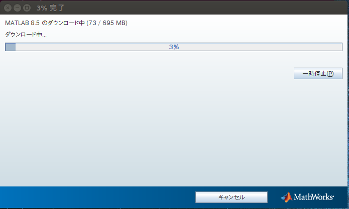
- After installation, you will need to verify the matlab license one more time:
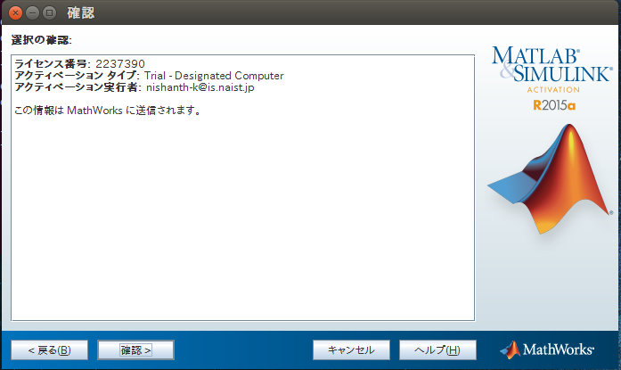
-
To start using Matlab, open a new terminal and type in the following command. （Matlabを起動するには新しいターミナルで次のコマンドを入力してください．）
./matlabGetting used to Ubuntu
Ubuntu is a free Operating System that is based on the Linux kernel. In the workshop, we will be using the Command Line Interface (CLI) called Terminal.
Please read these tutorial pages to get used to Terminal:
- 日本語: Official.
Please comment at the bottom of this page, if you know a better tutorial to learn about Terminal.
- English: Official.
Getting used to Matlab
Matlab is a computing software that is used in many fields of Science and Engineering. To learn the Matlab platform, you can refer to the following resources:
- 日本語: Official.
Please comment at the bottom of this page, if you know a better tutorial to learn about Matlab.
- English: Official.
Getting used to Git/Github
One of the workshops will be on Version Control Software called Git and on the Git online interface called Github.
For accessing the materials of the workshop, you need to create an account on the Github website:
- Please create a Github account from this link.
- Follow the user shibatalab from this link as shown in the figure below:
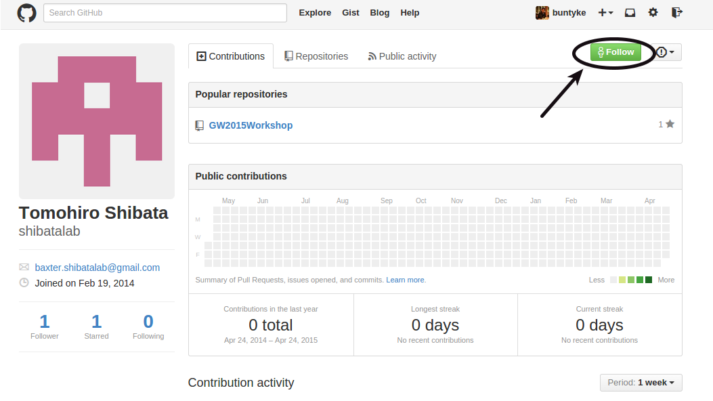
- Practice editing the contents of this site from the Github website as shown below:
Comment below
If you have completed all the steps required for attending the workshops, then please comment below with your name. Also please comment if you have any problems with the steps.